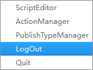
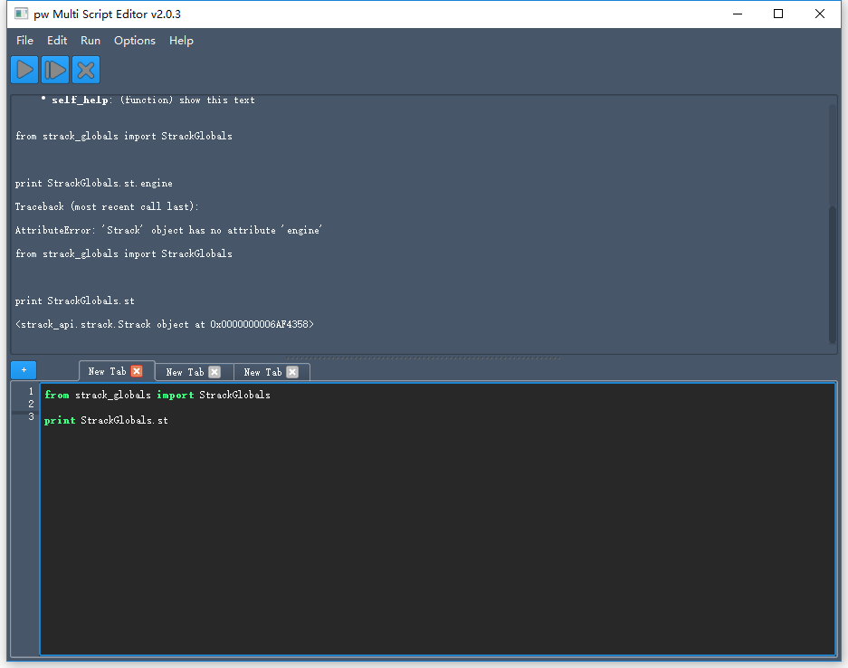
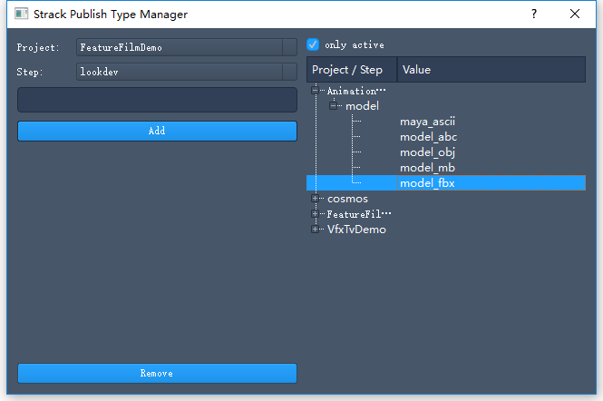

模块介绍
鼠标右键点击托盘，弹出菜单。
菜单

ScriptEditor
客户端集成了pw Multi Script Editor，并且添加了Strack系统环境，可以进行代码测试。

ActionManager
通过使用动作管理器可以方便地向Strack系统上注册动作或从中删除动作。

使用方法
- 在左侧选择一种实体类型, 添加的动作将对这种类型的实体产生作用。
- 点击右上角的添加按钮，会想表中添加一条动作。
- 修改Name、Type、Icon、Engine、Project、Command等字段，即可注册上自定义的功能。
- 从表格中选中一条，点击右上角的删除按钮可以将其从系统中删除。
PublishTypeManager
通过使用PublishType管理器可以方便地管理PublishType的信息。 PublishType 决定了在Publish时可以接受的文件。

左侧为功能区，添加和删除publishType。 右侧为显示区，显示已经存在的publishType。
使用方法
- 选择项目和工序。
- 输入publishType的名字。( 建议采用"工序"+"类型"的命名方式 )
- 点击Add按钮。如果已经存在就会在右侧选中，否则就创建新的，并在右侧显示。
- 需要删除时，在右侧选中需要删除的publishType，点击左下角的Remove按钮即可。
LogOut
退回到登陆界面
Quit
关闭程序